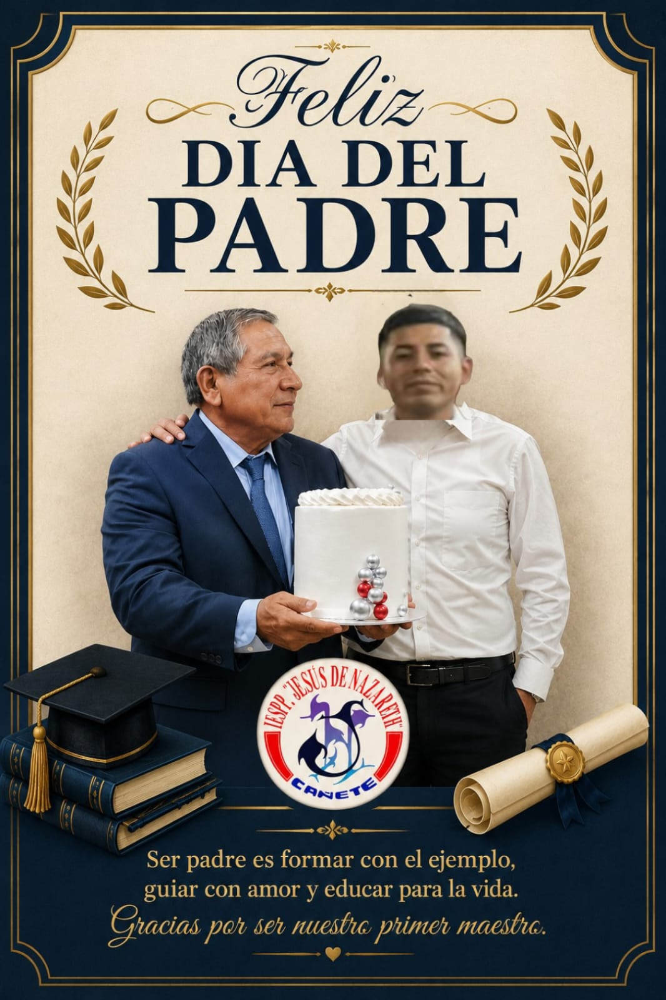
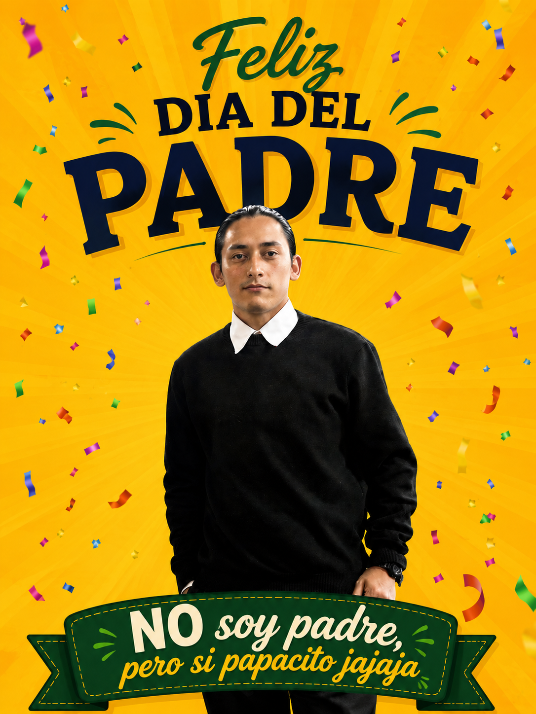
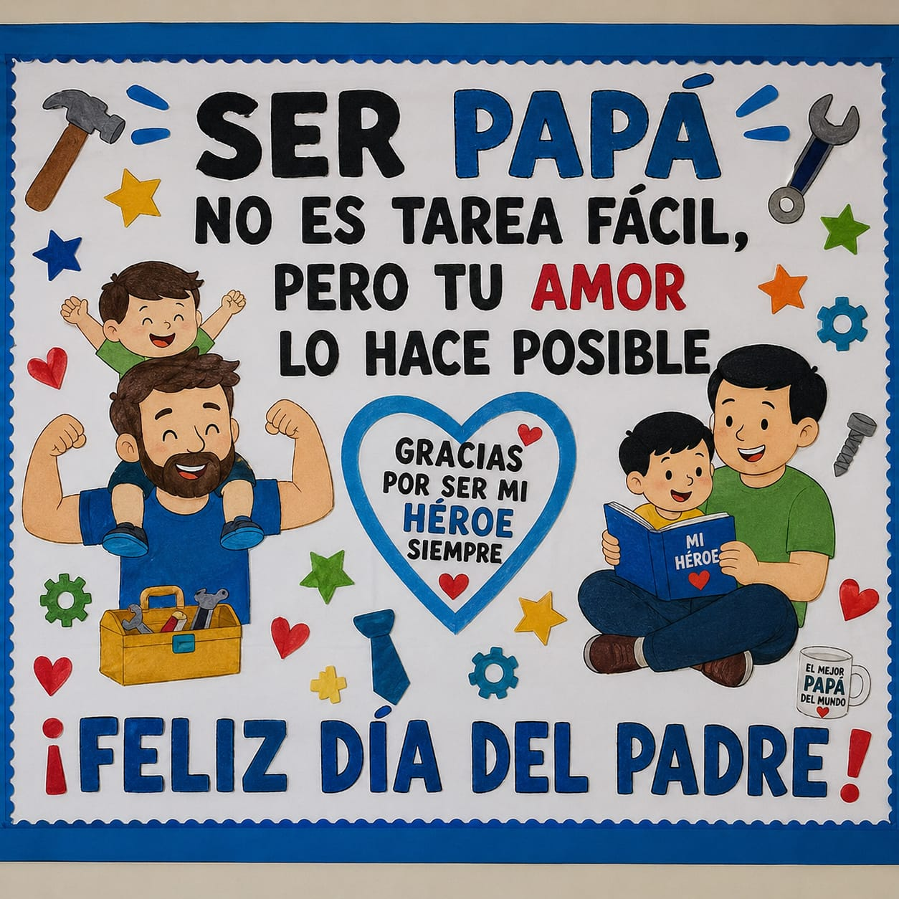

👨👧 Mural — Día del Padre
Un espacio especial para celebrar y homenajear a los padres de nuestra comunidad del VII Ciclo 💙



Próximas Actividades del Ciclo
Junio (Próximamente)
Día del Padre 👨👦
Espacio de reconocimiento y celebración a los padres de familia de nuestra comunidad.
Julio (Próximamente)
Día del Maestro 👩🏫
Celebración magna de nuestra vocación y labor formadora.
Agosto (Próximamente)
Así es mi Cañete 🎭
Celebración cultural de identidad local en honor a nuestra provincia de Cañete.
🎂 Próximos Cumpleaños del Aula 🎂
¡Celebremos juntos cada fecha especial de nuestros compañeros! 🎁
Junio
- 05/06:🎂 Ederson Jampier Lozano Perez
- 07/06:🎂 Ana Cecilia Huaman Herrera
- 10/06:🎂 Huari Villalobos Nuria Melissa
- 17/06:🎂 Rosales Luyo Janeth Milagros
- 28/06:🎂 Aburto Enciso Maricarmen Judith
Julio
- 12/07:🎂 Herrera Capcha Maggi Lina
- 19/07:🎂 Juan Manuel Sanchez Luyo
- 22/07:🎂 Serrano Arias Triana Milagros
- 24/07:🎂 Huamani Quito Angelica Milagros
- 28/07:🎂 Villalobos Luciani Betsabe Noemi
- 28/07:🎂 Camasi Bellido Tania Maricruz
Padrón de Estudiantes
- Aburto Enciso Maricarmen Judith
- Angeles Chávez Berenise Jasuri
- Ardiles Amado María Guadalupe
- Audante Ayllon Araceli Anali
- Barrios Medina Rousse Angely
- Camasi Bellido Tania Maricruz
- Campos Quispe Jackzuri Selene
- Cardenas Rodríguez Katherine Milluhsca
- Champion Pérez Esther Amelia
- Chulluncuy Huaman Luz Abencia
- Chumpitaz Pariona Rosa Lucia
- Condor Gutiérrez Verónica Antonella
- Cordero Contreras Nayely Elizabeth
- Cubillas Yactayo Claudia Isabella
- Cuzcano Castillo Beatriz Melchorita
- Dolores Pareja Belen de los Angeles
- Espinoza Franco Arianna Angelica
- Farfan Huamani María Angelica
- Flores Rodríguez Carol Isabel
- Francia Luyo Diana Catherine Milagros
- Gamarra Sánchez Brizeth Aracely
- Henríquez Polo Mirella Mikela
- Herrera Capcha Maggi Lina
- Huamani Quito Angelica Milagros
- Huaraca Linares Esther Briggti
- Huarcaya Huaman Jael Jaritza
- Huari Quispe Merkel Leslie
- Huari Villalobos Nuria Melissa
- Hurtado Payano Jackeline Medalyn
- Luyo Campos Rosaura aurora
- Medina Guerra Juana Milagros
- Mendoza Ortiz Carmen Pamela
- Payano Cruz Cristina Angela
- Quispe Gutiérrez Mariceli
- Quispe Quispe Janeth Rubi
- Quispe Sueng Karla Jessenia
- Reyna Gaete Margarita Ines
- Roque Guerrero Ingrid Fiorela
- Rosales Luyo Janeth Milagros
- Sánchez Yauri Geraldine Alexandra
- Sarmiento Soriano Tayri Keisi
- Serrano Arias Triana Milagros
- Sulluchuco Luyo Jazmin Natalia
- Valentin Apolinario Nayeli del pilar
- Valerio Mayta Flor Evelyn
- Ventura Quispe Ariana Liseth
- Vicente Huaman Rosario Angela
- Vicente Sánchez Melissa Lizbeth
- Villalobos Luciani Betsabe Noemi
- Zamudio Gutierrez María Esther
- Agapito Gomez Carmen Rocío
- Ascencio Peña Nayely Lucero
- Cáceres Huamán María de Fatima
- García Condori Yenifer del Rosario
- Herrera Huamán Ana Cecilia
- Isacupe Azurza Gladis
- López Puma Harold Josué
- Lozano Pérez Ederson Jampier
- Lujan Lujan Gloria Yaneth
- Meza Ortiz Leticia Milagros
- Obregón Humareda Karina Paola
- Pio Michuy Maribel Santa
- Ruiz Campos Wilson Marcelo
- Sánchez Luyo Juan Manuel
- Simón Vivanco Bruce Junior
- Tipiana Flores Johana Patricia
- Vicente Vega Angeli Yolanda
Herramientas Digitales del VII Ciclo
Accede a los sistemas interactivos exclusivos desarrollados para optimizar nuestra formación pedagógica y comunicación del VII Ciclo.